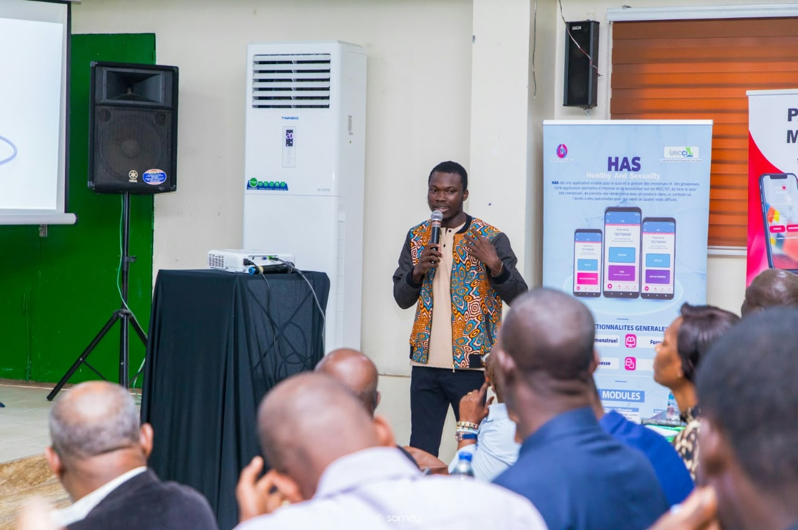
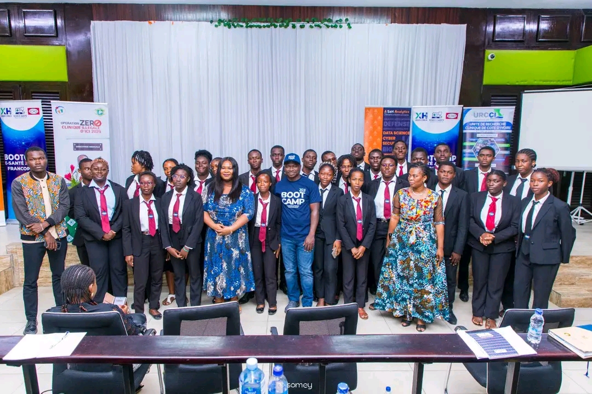

Data Analytics
Transformer vos données en indicateurs lisibles pour comprendre vos performances et agir au bon moment.
Data Analyst, Risk Analyst et créateur de contenu, je conçois des architectures d’analyse robustes ainsi que des applications web avec Shiny et Streamlit, optimisées pour booster votre structure, convertir vos utilisateurs, maximiser vos performances et accompagner votre croissance.
Mon rôle dépasse la simple analyse de données. Au-delà de collaborer directement avec les décideurs pour modéliser des solutions data-driven durables, je conçois des solutions qui combinent data, IA & technologie pour répondre à des problématiques concrètes. Je m'assure que chaque décision et chaque modèle apportent une valeur mesurable à votre entreprise.
Sélection de frameworks et langages maîtrisés au quotidien pour garantir vélocité et scalabilité.
Chaque modèle et solution optimisés se traduisent par une fiabilité, une efficacité ainsi qu'une amélioration des prédictions et des décisions. L'optimisation technique est au cœur de ma démarche et chaque outil apporte une expérience fluide et une réelle valeur métier.
Performance & efficacitéLa technologie doit répondre à un besoin concret. Je pars du problème pour concevoir des solutions simples, intuitives et adaptées au métier.
Data System & logiqueRapports réguliers, intégration continue, code auto-documenté et tests automatisés : une approche structurée et transparente de la conception à la livraison. Un processus fluide du premier contact jusqu'à la mise en production.
Rigueur & TransparenceJe partage mes connaissances et mon expérience en data, intelligence artificielle et technologie digitale à travers des contenus, formations, projets pratiques et du mentorat, aidant les professionnels et les étudiants à maîtriser les concepts avancés de la data science et de l'IA, tout en les guidant dans l'application pratique pour résoudre des problèmes réels.
DÉCOUVRIR MES FORMATIONSDécouvrez comment j'aide mes clients à transformer des défis techniques en performances commerciales mesurables.

Cette application web d'analyse statistique permet aux utilisateurs d'explorer et de nettoyer leurs données de manière interactive. Elle facilite la détection et le traitement des valeurs manquantes et aberrantes, la création de nouvelles variables, ainsi que des analyses univariées et bivariées (statistiques descriptives, visualisations, matrice de corrélation) pour une compréhension approfondie des données.
Cette application web d'économétrie permet aux utilisateurs d'analyser des données statistiques de manière interactive. Elle facilite les régressions (simples et multiples), les tests de validité, les prédictions et les analyses ANOVA/ANCOVA pour valider des hypothèses et interpréter des résultats économétriques.
Application web R/Shiny qui réunit SQL + IA + Data Viz dans une interface sombre premium. Un "couteau suisse" pour data analysts : connexion à n'importe quelle base, exploration du schéma, génération de SQL en langage naturel via IA (HENOC), visualisations interactives et rapports exportables — le tout dans une seule app.
Ce projet consiste en la conception d’un tableau de bord interactif dédié à la gestion et au suivi des risques financiers. Il permet de visualiser en temps réel les indicateurs clés de performance du portefeuille, notamment l’exposition totale, les pertes attendues, le taux de défaut et le ratio CET1. L’interface offre une vue d’ensemble claire et intuitive grâce à des graphiques dynamiques, des analyses sectorielles et des outils de simulation de décisions. Son design moderne et épuré facilite le suivi des données, l’analyse des risques et la prise de décision stratégique. Technologies et compétences mises en valeur : UI/UX Design, Dashboard Design, Data Visualization, analyse financière et conception d’interfaces interactives.

Ce tableau de bord interactif permet d'analyser les facteurs liés à la dépression chez les étudiants. Il centralise des indicateurs clés comme le taux de dépression, le stress financier, les habitudes de sommeil, et l'impact des antécédents familiaux, afin d'identifier les tendances et les groupes à risque.

Ce tableau de bord de suivi des ventes permet d'analyser les performances commerciales par région, pays, et période. Il centralise les indicateurs clés comme les ventes, les profits, les taux de réalisation des objectifs, et la satisfaction client pour optimiser les stratégies commerciales
BRVM Passif – Simulateur d’investissement pédagogique Application web développée avec R Shiny et bs4Dash pour démocratiser l’investissement à la BRVM, même avec un budget de 10 000 FCFA par mois. Elle permet de simuler ses investissements, suivre l’évolution du capital et des dividendes, découvrir les actions cotées et apprendre les bases de la Bourse grâce à des tableaux de bord interactifs.Technologies : R, Shiny, bs4Dash, Plotly, DT, dplyr. Application à vocation exclusivement pédagogique.
Solution digitale de prévention du suicide en Afrique francophone, utilisant l'IA pour offrir un soutien psychologique accessible et anonyme.
Analyse uni- et bivariée (R) d'une base de 167 pays et 10 indicateurs socio-économiques afin de cibler les pays prioritaires pour 10 M$ d'aide humanitaire. Après nettoyage des données (valeurs manquantes, winsorisation), l'étude identifie les corrélations clés (PIB/hab ↔ mortalité infantile : -0,88) et classe les pays les plus vulnérables — majoritairement africains (Burundi, Tchad, Centrafrique, Niger…) — avec une proposition de répartition des fonds par type de besoin. Outils : R (ggplot2, corrplot, DataExplorer) · Techniques : analyse univariée/bivariée, corrélation, winsorisation.

Ce portfolio présente l’essentiel de mes rapports et réalisations. Un second portfolio est également disponible pour découvrir des travaux complémentaires.
J'accompagne chaque étape de votre parcours data, de la collecte à la mise en place de solutions concrètes pour votre activité.
Transformer vos données en indicateurs lisibles pour comprendre vos performances et agir au bon moment.
Explorer, modéliser et prédire grâce à des méthodes statistiques et des modèles adaptés à vos enjeux.
Structurer des flux et des bases fiables pour rendre l'information disponible, propre et exploitable.
Concevoir des applications avec Shiny et Streamlit pour mettre vos analyses entre les mains des équipes.
Des tableaux de bord clairs, interactifs et pensés pour répondre aux questions qui comptent.
Quand la data rencontre les métiers, l'union devient exploitable.
SECTEURS D'INTERVENTIONAnalyser les indicateurs financiers pour mieux piloter les performances et anticiper les évolutions.
Exploiter les données pour évaluer les risques et améliorer la qualité des décisions.
Mettre les données au service du recrutement, du suivi des équipes et de la fidélisation.
Automatiser et fiabiliser le suivi des chiffres pour gagner en clarté et en efficacité.
Transformer les données pédagogiques en leviers de progression pour les apprenants.
Structurer et visualiser l'information pour soutenir des décisions plus rapides et pertinentes.
Une plateforme pensée pour transformer la data en opportunités concrètes.
Formations, ateliers et accompagnement pour apprendre la data, construire son portfolio et développer des compétences utiles.
Conférences, workshops et accompagnements pédagogiques pour intégrer la data et l'IA dans les parcours de formation.
Formations IA, conseils, dashboards et solutions data pour mieux comprendre les données et accélérer les décisions.
Au-delà de l'analyse de données, je m'engage à partager mes retours d'expérience et analyses techniques avec la communauté. Suivi par plus de 50 000 étudiants sur les réseaux, je vulgarise les concepts avancés et encourage les bonnes pratiques en data science.
Les femmes jouent un rôle crucial pour l’évolution technologique.

Optimisation et automatisation des tâches avec l'IA.
La data science appliquée aux développeurs.

Le data scientist talentueux a besoin d’un réseau.
Vous avez un projet, une idée ou une analyse à developper ? Afin de garantir un niveau d'engagement maximal, je n'accompagne que 2 nouveaux projets par trimestre. Discutons de votre feuille de route stratégique.